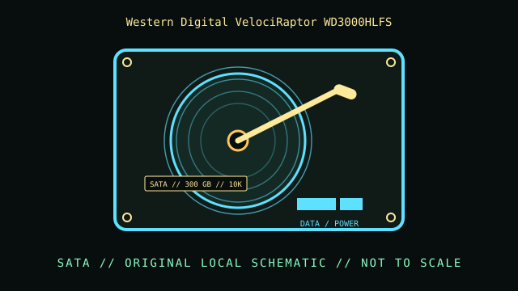

[ INDIVIDUAL COMPONENT // HARD DISK DRIVES ]
Western Digital VelociRaptor WD3000HLFS
VelociRaptor, 300 GB 10K SATA model. This record describes this exact catalog identity; related capacities, interface variants, suffixes, and revisions may have different properties.

IDENTIFICATION: Compare the complete model and suffix on the label with the manufacturer document and actual drive inquiry. Family-level values do not describe every revision or the condition of a particular unit.
Part specifications
| Catalog subcategory | SATA desktop drives |
|---|---|
| Catalog identity | Western Digital VelociRaptor WD3000HLFS |
| Product family | VelociRaptor, 300 GB 10K SATA model |
| Form factor | 3.5-inch IcePack carrier around a 2.5-inch drive mechanism; exact external dimensions are not inferred from this class. |
| Interface | SATA 3 Gb/s. |
| Capacity / performance / sectors | 300 GB; 10,000 RPM; 16 MB cache; 2.5-inch mechanism installed in the 3.5-inch IcePack mounting/cooling frame, per WD series sheet. |
| Compatibility | Connects as SATA, but physical fit and cooling depend on the IcePack carrier; check drive-height clearance and SATA controller mode. |
Handling, service & preservation
- Do not assume the metal IcePack is a standard 3.5-inch HDD case or remove it without service instructions. Preserve its mounting hardware and note carrier condition.
- Before service, photograph the label, connectors, board markings, firmware/model identity, and installed carrier; note condition and any prior repair.
- Never open a hard disk outside a qualified clean environment. Mechanical shocks, contamination, and uncontrolled power cycling can worsen failure.
- For preservation, make independent verified copies and record checksums and read errors; SMART or self-test results are useful evidence but do not guarantee future reliability.
Model-specific source
- Western Digital VelociRaptor product support and documentation (manufacturer page)WD datasheet covers the WD3000HLFS 300 GB model and its IcePack configuration.
Values above are limited to the cited exact-model or clearly identified model-family document. Record the document revision with any collection measurements.